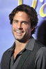

Country:United States, 100 minutes
Spoken languages:English
Genres:Action, Comedy, Horror, Sci-Fi, Thriller
Director(s):Brent Maddock
Writer(s):
Video Codec:Unknown
Number: 794


Certification:PG
Storyline:
Burt Gummer returns home to Perfection, Nev., to find that the town of terror has become a theme park, and when the simulated giant worm attacks turn real, the survivalist must battle the creatures once again. Gummer pits his impressive knowledge of weaponry against the newest and deadliest generation of flesh-eating graboids, with help from two young entrepreneurs.
Cast: 
Medium: Original DVD,
Comments: Part of: Tremors Attack Pack
Loaned: No
Aspect ratio: Unknown